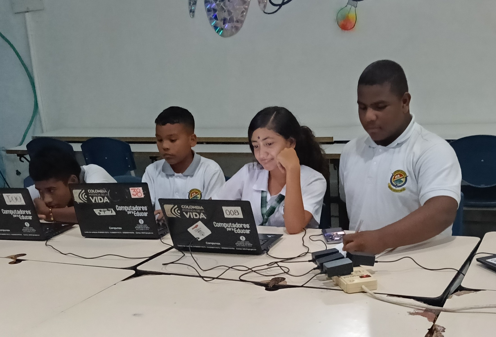
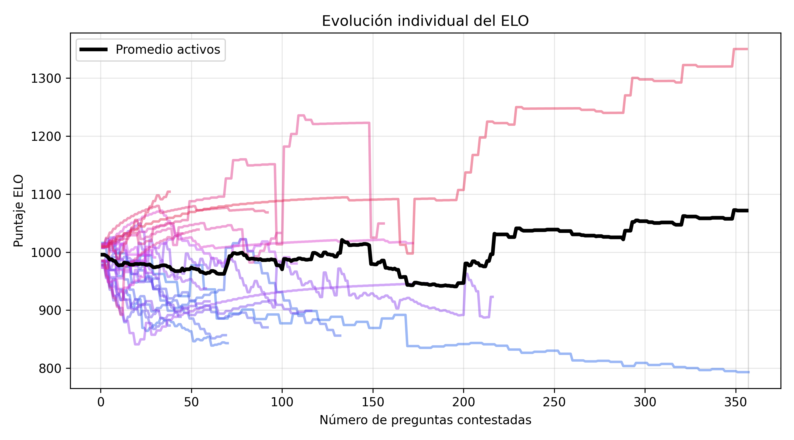
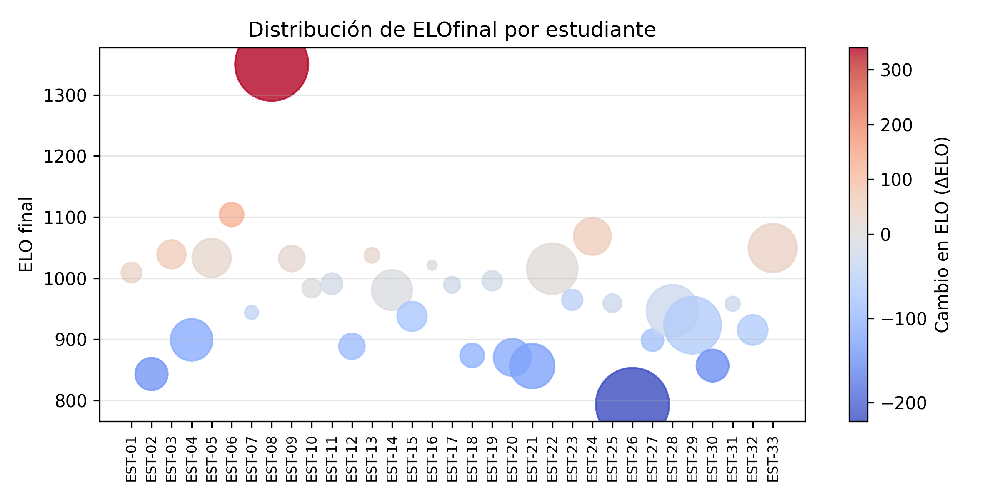
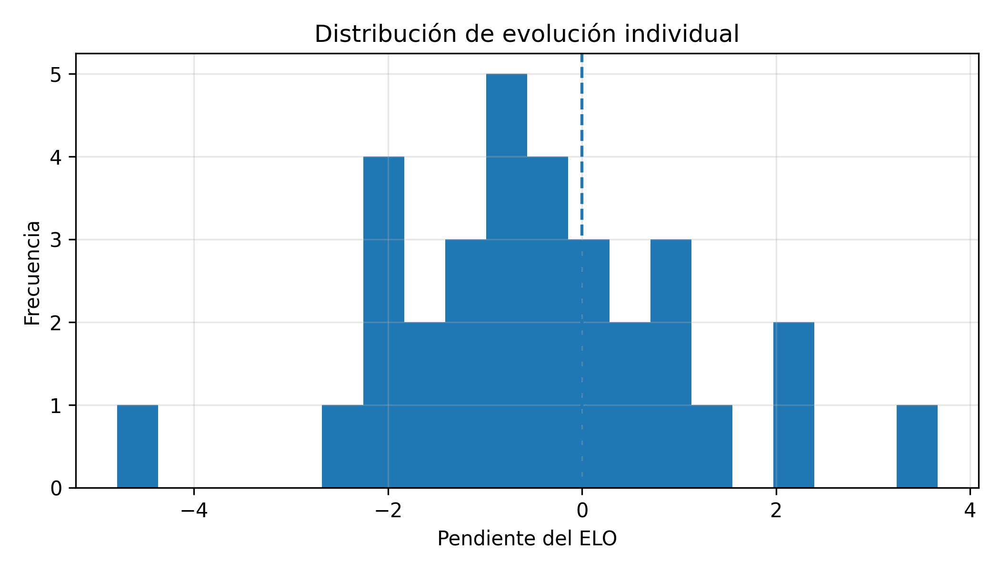
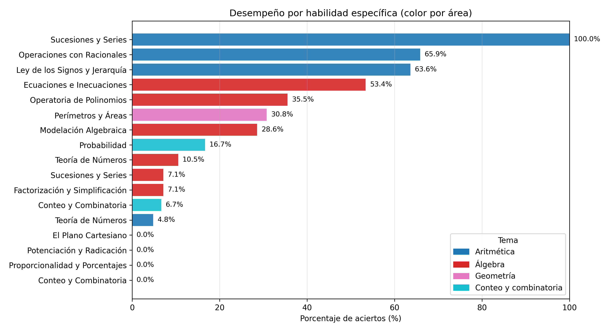
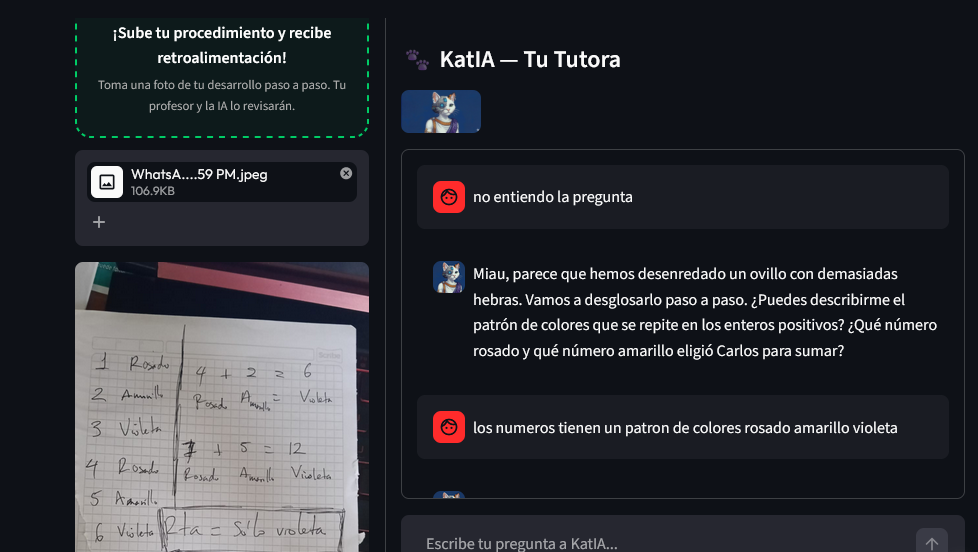
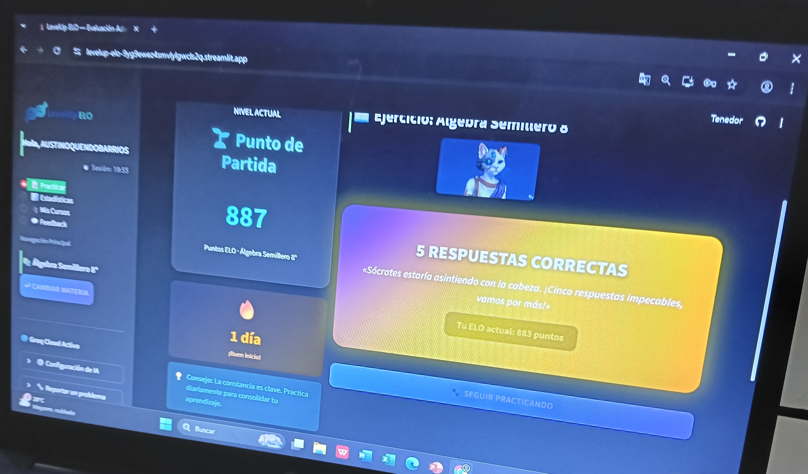

1. El Reto y Validación Temprana
Plataforma de Aprendizaje Adaptativo potenciada con IA
Validación en el semillero de matemáticas de una institución pública, con observación directa del usuario, mitigación de fricciones y ciclos de iteración ágiles.
Este piloto de validación temprana nace de una necesidad ineludible en el aula: superar la frustración matemática mediante la personalización masiva. Al ser ejecutado directamente por la CEO en su rol dual como docente del semillero, garantizamos un entorno de prueba empírico y sin intermediarios. Este nivel de acceso nos ha permitido observar la adopción orgánica de la herramienta, mitigar fricciones de usabilidad (UX) en tiempo real y ejecutar ciclos de iteración ágiles, asegurando que el algoritmo responda verdaderamente a la diversidad cognitiva de los estudiantes antes de su escalamiento.
El Problema: El "Techo de Cristal"
La educación de "talla única" deja a la mayoría sin herramientas. Datos de la convocatoria anterior:
Olimpiadas UdeA
Nuestra Hipótesis y Rigor de Prueba
Con el entrenamiento adaptativo de LevelUp y la tutoría socrática, un mayor porcentaje superará el embudo. Meta: Llevar al menos a 1 estudiante a la fase presencial.
- Población: 33 estudiantes del semillero con perfiles dispares. Escenario ideal para probar el ELO.
- Contenido: Bancos de preguntas basados en modelos liberados por la UdeA.
- Ética y Datos: Consentimiento informado de acudientes y procesamiento cauteloso de datos para seguimiento individual.
- Rutina: 1 hora fija semanal en aula (observación) + adopción orgánica en casa.

Estudiantes en el semillero
El Volumen de Práctica como Indicador de Éxito: Durante las primeras dos semanas de validación, la plataforma superó las métricas proyectadas de adopción orgánica. El alto volumen de preguntas resueltas y las más de 300 interacciones socráticas demuestran que los estudiantes están cumpliendo con la rutina obligatoria en aula y están utilizando LevelUp como su principal herramienta de estudio autónomo. Este nivel de "engagement" es el primer paso crítico antes de medir el delta cognitivo.
Población Activa
33
Estudiantes reales
Volumen de Práctica
2,164
Preguntas resueltas
Precisión Promedio
64.1%
Tasa de acierto global
Intervenciones KatIA
+300
Asistencias socráticas
Curva de Aprendizaje Promedio del Semillero

Análisis: Todos inician con un ELO base en 1000. La curva refleja cómo el puntaje se ajusta al desempeño real del grupo, marcando la línea base (piso técnico) sobre la cual buscaremos escalar.
Desempaquetando la Heterogeneidad del Aula: El promedio global suele ocultar la realidad de los extremos. Estas métricas individuales son el corazón del sistema ELO. Al observar la línea base y la evolución de cada estudiante, confirmamos nuestra hipótesis más importante: la constancia en la resolución de problemas no está reservada únicamente para los perfiles de "alto rendimiento natural". La personalización de la dificultad previene la frustración y mantiene a todos los perfiles en la zona de desarrollo próximo.
Línea Base ELO (Heterogeneidad)

Análisis: Identificamos perfiles críticos que requieren nivelación inmediata para evitar frustración, y talentos base que deben ser impulsados.
Evolución de Nivel ELO (Por Estudiante)

Análisis: La constancia (>100 preguntas) no está limitada a estudiantes de resultados excepcionales. Alto nivel de engagement general.
Estructura Taxonómica de 3 Niveles
Cada pregunta está etiquetada bajo nuestro manual oficial para perfilar vacíos de conocimiento con precisión quirúrgica:
- Nivel 1 (Áreas): Aritmética, Álgebra, Geometría, Probabilidad y Estadística, Lógica, Conteo y Combinatoria.
- Nivel 2 (Sub-áreas): Ej. Sistemas Numéricos, Ecuaciones, Probabilidad.
- Nivel 3 (Tópicos): Conceptos atómicos como Factorización por agrupación.

Insights para el Aula: La combinación de datos individuales y por categorías transforma al docente en un estratega basado en evidencia. Sabemos exactamente qué conceptos reforzar en la pizarra.

KatIA
Motor Adaptativo Socrático
Perfil Operativo y Visión Pedagógica
KatIA es el núcleo interactivo de la plataforma. Por diseño, KatIA tiene prohibido entregar respuestas directas. En su lugar, actúa como una tutora socrática disponible 24/7. Al detectar un bloqueo, el motor cruza el historial ELO del estudiante con la taxonomía del problema para intervenir de forma milimétrica: fomenta la autonomía cognitiva, audita la lógica procedimental en tiempo real y transforma el error en el principal catalizador del aprendizaje matemático.
1. Tutoría Socrática
No entrega respuestas directas. Detecta el nodo de dificultad y formula preguntas guía progresivas para que el estudiante construya su propio camino lógico hacia la solución, fortaleciendo la autonomía.
2. Analizador Procedimental
Evalúa el procedimiento matemático paso a paso. Identifica exactamente dónde ocurre la desviación algorítmica (ej. error de signo) en lugar de calificar solo el resultado final binario.
3. Recomendador Taxonómico
Ante caídas de ELO sostenidas, el algoritmo emite alertas sugiriendo regresar a repasar conceptos base antes de continuar intentando ejercicios de alta dificultad competitiva.
Nuestra Interfaz: LevelUp en Acción
La teoría se vuelve práctica cuando el usuario interactúa. La siguiente captura de pantalla ilustra el núcleo de nuestra estrategia pedagógica: un estudiante enfrentando un problema de Olimpiadas, asistido en tiempo real por KatIA. Observe cómo la tutora no entrega la respuesta; en su lugar, el sistema detecta el error algorítmico y genera un diálogo socrático diseñado para catalizar el "momento eureka". Esta es la experiencia que estamos iterando y perfeccionando antes del lanzamiento a mayor escala.

Chat de un estudiante con KatIA
"La tecnología potencia al maestro, no lo reemplaza."
Visión a Corto Plazo: Roadmap
UX / UI Iterativa
Pulir las fricciones de interfaz identificadas mediante la observación directa en aula. Cada fricción eliminada previene el abandono.
Semana 4: Primer Delta
Medición del primer "delta" de crecimiento real de habilidades en uso autónomo, confirmando si el ELO refleja ganancia cognitiva comprobable.
Mayo - Junio: Fase 1
Monitorización de resultados proyectados en los intentos oficiales de las Olimpiadas. El éxito final se medirá en clasificados, no solo en usuarios activos.

Experiencia de usuario en aula con el ELO